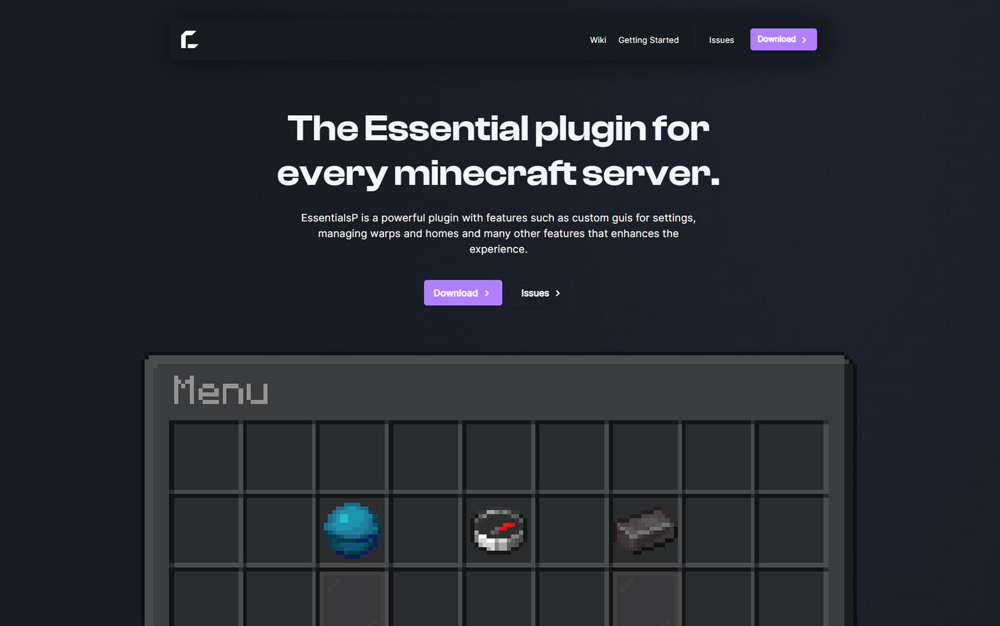

Hi, my name is
Nils Ulmann.
I'm Java/Web developer.
I’m a Java/Web developer specializing in building minecraft plugins and creating websites. Currently, I’m working on EssentialsP one of the most customizable plugins ever created.
About Me
Some Things I’ve Built
-

Featured Project
EssentialsP
A plugin that acts as structure of a server, with any feature you'd expect. All can be configured in menus, available on Modrinth and Github
- Modrinth
- Github
- Plugin
- Open Source
- Minecraft
-
Featured Project
PandaClient
A client for the game minecraft, which allows you to add modifications and fps boosting. Suddenly i had to pause the project because i was stuck. The code can still be viewed on Github.
- 1.8.9
- Github
- Client
- Open Source
- PVP

-
Featured Project
Portfolio
It's this website i coded completely myself. Actually this is a remake of my old Website.
- Website
- Projects
- Contact
- Open Source